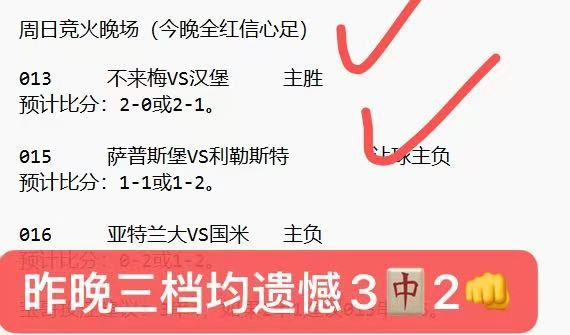

昨天三档竞火均3中2（两场意甲均遭遇冷平），今晚全红信心足！欢迎打赏支持宝哥！

安卓手机请安装APP，苹果手机收藏首页后，和app同样的体验！（用相机扫码安装）

昨晚意甲第12轮，国米客场多次两球领先的情况下，被亚特兰大4-4逼平，包括第91分钟凯西的点球破门。比赛中，P·埃斯波西托上演了帽子戏法，第77分钟在球队4-2领先时被换下，但国米最后10分钟到手的3分变成了1分。其他意甲，博洛尼亚主场在先进球的情况下，被副班长乌迪内斯1-1逼成平局。
英超焦点赛事，利物浦主场4-0大胜刚刚换帅的曼联。第8分钟，曼联的约罗就吃到红牌下场，这也成为比赛的转折点。随后，索博斯洛伊、维尔茨，和恩古莫哈、穆尼奥斯上下半场各进一球，报了上赛季被对手双杀的一箭之仇。
今天赛事不多。第一场关注意甲第12轮，排名第18的蒙扎主场迎战第15名的佛罗伦萨，这也是一场提前到来的保级大战。蒙扎上轮主场0-1不敌亚特兰大，遭遇4连败。作为升班马的蒙扎，新赛季已经输掉8场，保级前景不太乐观。佛罗伦萨上轮主场2-2平尤文，最近3轮面对强敌1胜2平拿到5分，状态不错。尽管如此，佛罗伦萨也只是高出对手2分。本场比赛，机构多为客让半球，佛罗伦萨能客场赢球吗？我觉得未必。毕竟24/25赛季两次交锋，蒙扎1胜1平保持不败，心理有优势。
第二场关注瑞典超第29轮，排名第2的哈马比主场迎战第10名的哥德堡。前者少赛一场的情况下落后领头羊天狼星3分。在联赛只剩下两轮的情况下，主场作战的哈马比拒绝任何冷门。毕竟，哥德堡已经没有太多战意了。
欢迎大家收藏宝哥首页，请分享给好友或转发到朋友圈，让更多人看到我。
安卓用户可以下载APP，更便捷看到宝哥每天的动态！苹果手机收藏首页